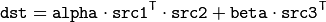

Operations on Matrices¶
gpu::gemm¶
Performs generalized matrix multiplication.
-
C++:
gpu::gemm(const GpuMat& src1, const GpuMat& src2, double alpha, const GpuMat& src3, double beta, GpuMat& dst, int flags=0, Stream& stream=Stream::Null())¶ Parameters: - src1 – First multiplied input matrix that should have
CV_32FC1,CV_64FC1,CV_32FC2, orCV_64FC2type. - src2 – Second multiplied input matrix of the same type as
src1. - alpha – Weight of the matrix product.
- src3 – Third optional delta matrix added to the matrix product. It should have the same type as
src1andsrc2. - beta – Weight of
src3. - dst – Destination matrix. It has the proper size and the same type as input matrices.
- flags –
Operation flags:
- GEMM_1_T transpose
src1 - GEMM_2_T transpose
src2 - GEMM_3_T transpose
src3
- GEMM_1_T transpose
- stream – Stream for the asynchronous version.
- src1 – First multiplied input matrix that should have
The function performs generalized matrix multiplication similar to the gemm functions in BLAS level 3. For example, gemm(src1, src2, alpha, src3, beta, dst, GEMM_1_T + GEMM_3_T) corresponds to

Note
Transposition operation doesn’t support CV_64FC2 input type.
See also
gpu::transpose¶
Transposes a matrix.
-
C++:
gpu::transpose(const GpuMat& src1, GpuMat& dst, Stream& stream=Stream::Null() )¶ Parameters: - src1 – Source matrix. 1-, 4-, 8-byte element sizes are supported for now (CV_8UC1, CV_8UC4, CV_16UC2, CV_32FC1, etc).
- dst – Destination matrix.
- stream – Stream for the asynchronous version.
See also
gpu::flip¶
Flips a 2D matrix around vertical, horizontal, or both axes.
-
C++:
gpu::flip(const GpuMat& a, GpuMat& b, int flipCode, Stream& stream=Stream::Null() )¶ Parameters: - a – Source matrix. Supports 1, 3 and 4 channels images with
CV_8U,CV_16U,CV_32SorCV_32Fdepth. - b – Destination matrix.
- flipCode –
Flip mode for the source:
0Flips around x-axis.>0Flips around y-axis.<0Flips around both axes.
- stream – Stream for the asynchronous version.
- a – Source matrix. Supports 1, 3 and 4 channels images with
See also
gpu::LUT¶
Transforms the source matrix into the destination matrix using the given look-up table: dst(I) = lut(src(I))
-
C++:
gpu::LUT(const GpuMat& src, const Mat& lut, GpuMat& dst, Stream& stream=Stream::Null())¶ Parameters: - src – Source matrix.
CV_8UC1andCV_8UC3matrices are supported for now. - lut – Look-up table of 256 elements. It is a continuous
CV_8Umatrix. - dst – Destination matrix with the same depth as
lutand the same number of channels assrc. - stream – Stream for the asynchronous version.
- src – Source matrix.
See also
gpu::merge¶
Makes a multi-channel matrix out of several single-channel matrices.
-
C++:
gpu::merge(const GpuMat* src, size_t n, GpuMat& dst, Stream& stream=Stream::Null())¶
-
C++:
gpu::merge(const vector<GpuMat>& src, GpuMat& dst, Stream& stream=Stream::Null())¶ Parameters: - src – Array/vector of source matrices.
- n – Number of source matrices.
- dst – Destination matrix.
- stream – Stream for the asynchronous version.
See also
gpu::split¶
Copies each plane of a multi-channel matrix into an array.
-
C++:
gpu::split(const GpuMat& src, GpuMat* dst, Stream& stream=Stream::Null())¶
-
C++:
gpu::split(const GpuMat& src, vector<GpuMat>& dst, Stream& stream=Stream::Null())¶ Parameters: - src – Source matrix.
- dst – Destination array/vector of single-channel matrices.
- stream – Stream for the asynchronous version.
See also
gpu::magnitude¶
Computes magnitudes of complex matrix elements.
-
C++:
gpu::magnitude(const GpuMat& xy, GpuMat& magnitude, Stream& stream=Stream::Null() )¶
-
C++:
gpu::magnitude(const GpuMat& x, const GpuMat& y, GpuMat& magnitude, Stream& stream=Stream::Null())¶ Parameters: - xy – Source complex matrix in the interleaved format (
CV_32FC2). - x – Source matrix containing real components (
CV_32FC1). - y – Source matrix containing imaginary components (
CV_32FC1). - magnitude – Destination matrix of float magnitudes (
CV_32FC1). - stream – Stream for the asynchronous version.
- xy – Source complex matrix in the interleaved format (
See also
gpu::magnitudeSqr¶
Computes squared magnitudes of complex matrix elements.
-
C++:
gpu::magnitudeSqr(const GpuMat& xy, GpuMat& magnitude, Stream& stream=Stream::Null() )¶
-
C++:
gpu::magnitudeSqr(const GpuMat& x, const GpuMat& y, GpuMat& magnitude, Stream& stream=Stream::Null())¶ Parameters: - xy – Source complex matrix in the interleaved format (
CV_32FC2). - x – Source matrix containing real components (
CV_32FC1). - y – Source matrix containing imaginary components (
CV_32FC1). - magnitude – Destination matrix of float magnitude squares (
CV_32FC1). - stream – Stream for the asynchronous version.
- xy – Source complex matrix in the interleaved format (
gpu::phase¶
Computes polar angles of complex matrix elements.
-
C++:
gpu::phase(const GpuMat& x, const GpuMat& y, GpuMat& angle, bool angleInDegrees=false, Stream& stream=Stream::Null())¶ Parameters: - x – Source matrix containing real components (
CV_32FC1). - y – Source matrix containing imaginary components (
CV_32FC1). - angle – Destination matrix of angles (
CV_32FC1). - angleInDegrees – Flag for angles that must be evaluated in degrees.
- stream – Stream for the asynchronous version.
- x – Source matrix containing real components (
See also
gpu::cartToPolar¶
Converts Cartesian coordinates into polar.
-
C++:
gpu::cartToPolar(const GpuMat& x, const GpuMat& y, GpuMat& magnitude, GpuMat& angle, bool angleInDegrees=false, Stream& stream=Stream::Null())¶ Parameters: - x – Source matrix containing real components (
CV_32FC1). - y – Source matrix containing imaginary components (
CV_32FC1). - magnitude – Destination matrix of float magnitudes (
CV_32FC1). - angle – Destination matrix of angles (
CV_32FC1). - angleInDegrees – Flag for angles that must be evaluated in degrees.
- stream – Stream for the asynchronous version.
- x – Source matrix containing real components (
See also
gpu::polarToCart¶
Converts polar coordinates into Cartesian.
-
C++:
gpu::polarToCart(const GpuMat& magnitude, const GpuMat& angle, GpuMat& x, GpuMat& y, bool angleInDegrees=false, Stream& stream=Stream::Null())¶ Parameters: - magnitude – Source matrix containing magnitudes (
CV_32FC1). - angle – Source matrix containing angles (
CV_32FC1). - x – Destination matrix of real components (
CV_32FC1). - y – Destination matrix of imaginary components (
CV_32FC1). - angleInDegrees – Flag that indicates angles in degrees.
- stream – Stream for the asynchronous version.
- magnitude – Source matrix containing magnitudes (
See also
gpu::normalize¶
Normalizes the norm or value range of an array.
-
C++:
gpu::normalize(const GpuMat& src, GpuMat& dst, double alpha=1, double beta=0, int norm_type=NORM_L2, int dtype=-1, const GpuMat& mask=GpuMat())¶
-
C++:
gpu::normalize(const GpuMat& src, GpuMat& dst, double a, double b, int norm_type, int dtype, const GpuMat& mask, GpuMat& norm_buf, GpuMat& cvt_buf)¶ Parameters: - src – input array.
- dst – output array of the same size as
src. - alpha – norm value to normalize to or the lower range boundary in case of the range normalization.
- beta – upper range boundary in case of the range normalization; it is not used for the norm normalization.
- normType – normalization type (see the details below).
- dtype – when negative, the output array has the same type as
src; otherwise, it has the same number of channels assrcand the depth=CV_MAT_DEPTH(dtype). - mask – optional operation mask.
- norm_buf – Optional buffer to avoid extra memory allocations. It is resized automatically.
- cvt_buf – Optional buffer to avoid extra memory allocations. It is resized automatically.
See also
Help and Feedback
You did not find what you were looking for?- Ask a question on the Q&A forum.
- If you think something is missing or wrong in the documentation, please file a bug report.